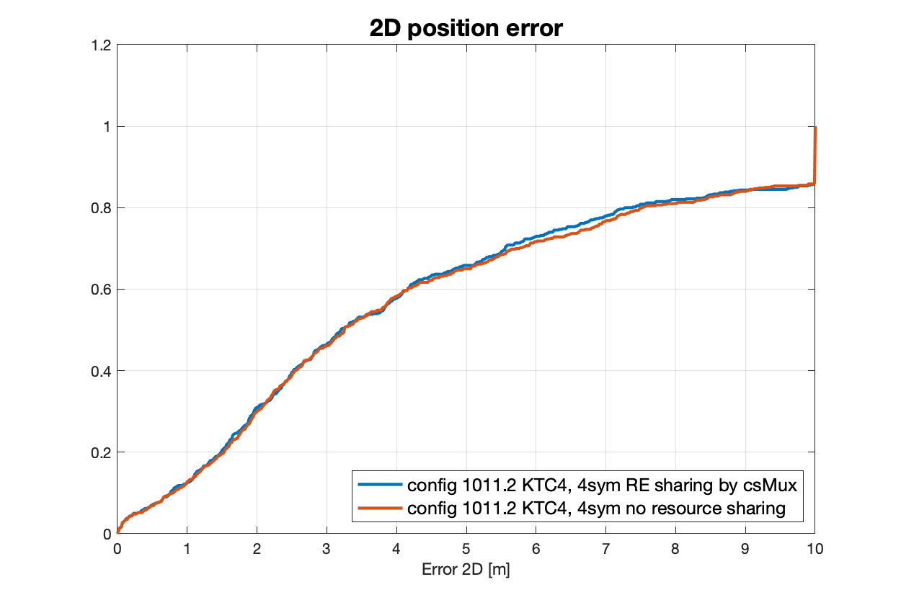

1-symbol PRS with comb-4 and comb-12 is evaluated compared to 4-symbol and 12-symbol, respectively, assuming
- PRS transmission periodicity is 160ms
- PRS numerology is 30kHz
- 8 PRS resources with 12 symbols or 4 symbols per PRS resource
- The PRS bandwidth is 100MHz
In addition, E-CID is also compared against PRS-based methods.
The evaluation results are summarized in Table C.3.1.1.2-1.
Table C.3.1.1.2-1: NR positioning enhancements – network efficiency summary [4]
| Case | Positioning resource utilization |
|---|---|
| Case E1: PRS with 12 symbols | 2.14% |
| Case E2: PRS with 4 symbols | 0.714% |
| Case E3: PRS with 1 symbol | 0.179% |
| Case E4: E-CID enhancement | 0% |
By reducing the PRS symbols from 12 and 4 to 1 for comb-12 and comb-4, respectively, the overhead of PRS transmission is reduced by 11/12 and 3/4, respectively.
In this section, evaluation scenarios and parameters of network efficiency analysis for NR positioning enhancements are given in Table C.3.1.2.1-1.
Table C.3.1.2.1-1: NR positioning enhancements - evaluation scenarios and parameters [8]
| Parameter | [Case 1], [InF-HH-2D], [FR1], [DL-TDOA+ DL-CPP] | [Case 2], [InF-HH-2D], [FR1], [UL-TDOA+ UL-CPP] |
|---|---|---|
| Channel model (baseline) | InF-HH-2D | InF-HH-2D |
| Carrier frequency | 3.5GHz | 3.5GHz |
| Subcarrier spacing | 30KHz | 30KHz |
| System Bandwidth | 100MHz | 100MHz |
| Reference Signal Transmission Bandwidth | 100MHz | 100MHz |
| Reference Signal Physical Structure and Resource Allocation (RE pattern) | DL PRS, Comb- 6 |
UL SRS, Comb- 8 |
Reference signal (type of sequence, number of ports, …) |
Gold sequence, Port-1 |
ZC sequence, Port-1 |
| Number of sites | 6 | 6 |
| Number of symbols used per occasion | 12 | 12 |
| number of occasions used per positioning estimate | 1 | 1 |
| Evaluated Enhancement for Rel.17 |
DL-TDOA+ DL-CPP | UL-TDOA+ UL-CPP |
| Periodicity of reference signal | 20ms | 20ms |
| Number of PRS resource sets in one periodicity | 1 | 1 |
| Number of PRS Resources per PRS resource set | 1 | 1 |
| Number of users per site | 1,30 | 1,30 |
For the proposed NR positioning enhancements, we use DL-TDOA+DL-CPP or UL-TDOA+UL-CPP as the Rel.17 enhancement scheme. Carrier Phase Positioning can be supported by using Rel.16 DL-PRS or UL-SRS, i.e., the UE or gNB can get the carrier phase measurements together with other NR positioning measurements without additional RF resources and new reference signals. Therefore, the network efficiency of our proposed NR positioning enhancements is the same as that of Rel.16 positioning solutions.
The definition of DL-PRS/UL-SRS resource utilization and the calculation of DL-PRS/UL-SRS resource utilization according to the described definition are shown as in below.
Definition of DL-PRS resource utilization
Assume gNB x has M TRPs (the index of TRP is j, and j=1~M-1) which are configured to transmit DL-PRS, and each TRP is configured with N DL-PRS resource sets (the index of DL-PRS resource set is i, i=1~N-1). In order to avoid the interference among these DL-PRS resource sets, either the time-domain resources or the frequency-domain resources are orthogonal among these DL-PRS resource sets belongs to the same gNB.
We use DL_PRS_RU to denote DL-PRS resource utilization, then the DL-PRS resource utilization of gNB x (\({DL\_ PRS\_ RU}_{gNB\ x}\)) can be derived as follows,
\[{DL\_ PRS\_ RU}_{PRS\ resource\ set\ i}\ = \ {DL\_ PRS\_ RU}_{PRS\ resource\ set\ i,\ time - domain} \times {DL\_ PRS\_ RU}_{PRS\ resource\ set\ i,\ frequency - domain}\]
\[{DL\_ PRS\_ RU}_{PRS\ resource\ set\ i,\ time - domain} = \frac{\ {NumOfSymbols}_{PRS\ resource}}{{Periodicity}_{PRS\ resource\ set\ i} \times {NumOfSymbols}_{Per\ millisecond}} \times {NumofPRSResources}_{PRS\ resource\ set\ i} \times {RepetitionFactor}_{PRS\ resource\ set\ i}\ \]
\[{DL\_ PRS\_ RU}_{PRS\ resource\ set\ i,\ frequency - domain} = \frac{{BandWidth}_{PRS\ resource\ set\ i}}{{BandWidth}_{System}} \times \frac{1}{{CombSizeN}_{PRS\ resource\ set\ i}}\]
\[{DL\_ PRS\_ RU}_{TRP\ j}\ = \ \sum_{i = 1}^{N}{DL\_ PRS\_ RU}_{PRS\ resource\ set\ i}\]
\[{DL\_ PRS\_ RU}_{gNB\ x}\ = \ \sum_{j = 1}^{M}{DL\_ PRS\_ RU}_{TRP\ j}\]
Calculation of DL-PRS resource utilization
The calculation of DL-PRS resource utilization according to the above described definition are shown as follows,
\[{DL\_ PRS\_ RU}_{PRS\ resource\ set\ i,\ time - domain} = \frac{12}{20 \times 28} \times 1 \times 1 = 2.1\%\ \]
\[{DL\_ PRS\_ RU}_{PRS\ resource\ set\ i,\ frequency - domain} = \frac{100MHz}{100MHz} \times \frac{1}{6} = 16.7\%\]
\[{DL_{PRS_{RU}}}_{PRS\ resource\ set\ i}\ = \ {DL\_ PRS\_ RU}_{PRS\ resource\ set\ i,\ time - domain} \times {DL\_ PRS\_ RU}_{PRS\ resource\ set\ i,\ frequency - domain} = 2.1\% \times 16.7\% = 0.36\%\]
\[{DL\_ PRS\_ RU}_{TRP\ j}\ = \ \sum_{i = 1}^{1}{{DL\_ PRS\_ RU}_{PRS\ resource\ set\ i} =}0.36\%\]
\[{DL\_ PRS\_ RU}_{gNB\ x}\ = \ \sum_{j = 1}^{6}{DL\_ PRS\_ RU}_{TRP\ j} = 2.1\%\]
Definition of SRS-Pos resource utilization
Assume gNB x serves M UEs (the index of UE is j, and j=1~M-1) which are configured to transmit SRS-Pos, and each UE is configured with N SRS-Pos resource sets (the index of SRS-Pos resource set is i, i=1~N-1). In order to avoid the interference among these SRS-Pos resource sets, either the time-domain resources or the frequency-domain resources are orthogonal among these SRS-Pos resource sets belongs to the same gNB.
We use SRS_Pos_RU to denote SRS-Pos resource utilization, then the SRS-Pos resource utilization of gNB x (\({SRS\_ Pos\_ RU}_{gNB\ x}\)) can be derived as follows,
\[{SRS\_ Pos\_ RU}_{SRS\ resource\ set\ i}\ = \ {SRS\_ Pos\_ RU}_{SRS\ resource\ set\ i,\ time - domain} \times {SRS\_ Pos\_ RU}_{SRS\ resource\ set\ i,\ frequency - domain}\]
\[{SRS\_ Pos\_ RU}_{SRS\ resource\ set\ i,\ time - domain} = \frac{\ {NumOfSymbols}_{SRS\ resource}}{{Periodicity}_{SRS\ resource\ set\ i} \times {NumOfSymbols}_{Per\ millisecond}} \times {NumofSRSResources}_{SRS\ resource\ set\ i}\ \]
\[{SRS\_ Pos\_ RU}_{SRS\ resource\ set\ i,\ frequency - domain} = \frac{{BandWidth}_{SRS\ resource\ set\ i}}{{BandWidth}_{System}} \times \frac{1}{{CombSizeN}_{SRS\ resource\ set\ i}}\]
\[{SRS\_ Pos\_ RU}_{UE\ j}\ = \ \sum_{i = 1}^{N}{SRS\_ Pos\_ RU}_{SRS\ resource\ set\ i}\]
\[{SRS\_ Pos\_ RU}_{gNB\ x}\ = \ \sum_{j = 1}^{M}{SRS\_ Pos\_ RU}_{UE\ j}\]
Calculation of SRS-Pos resource utilization
The calculation of UL-SRS resource utilization according to the above described definition are shown as follows,
\[{SRS\_ Pos\_ RU}_{SRS\ resource\ set\ i,\ time - domain} = \frac{\ 12}{20 \times 28} \times 1 = 2.1\%\ \]
\[{SRS\_ Pos\_ RU}_{SRS\ resource\ set\ i,\ frequency - domain} = \frac{100MHz}{100MHz} \times \frac{1}{8} = 12.5\%\]
\[{SRS\_ Pos\_ RU}_{SRS\ resource\ set\ i}\ = \ {SRS\_ Pos\_ RU}_{SRS\ resource\ set\ i,\ time - domain} \times {SRS\_ Pos\_ RU}_{SRS\ resource\ set\ i,\ frequency - domain} = 4.3\% \times 12.5\% = 0.5\%\]
\[{SRS\_ Pos\_ RU}_{UE\ j}\ = \ \sum_{i = 1}^{1}{SRS\_ Pos\_ RU}_{SRS\ resource\ set\ i} = 0.27\%\]
When there are 1 user per site,
\[{SRS\_ Pos\_ RU}_{gNB\ x}\ = \ \sum_{j = 1}^{1 \times 6}{SRS\_ Pos\_ RU}_{UE\ j} = 1.6\%\]
When there are 30 users per site,
\[{SRS\_ Pos\_ RU}_{gNB\ x}\ = \ \sum_{j = 1}^{30 \times 6}{SRS\_ Pos\_ RU}_{UE\ j} = 48.2\%\]
Brief description of evaluation scenarios and key parameters of evaluation. section
For the network efficiency based on PRS, at least the comb size, number of symbols, TRP number, PRS periodicity, resource repetition factor, muting pattern, numerology and beam sweeping assumptions of PRS should be included in resource utilization. It can be represented as equation (1)
\(PRS:Network\ efficiency\ = \frac{\ TRPNum \times \frac{NumSymbols}{CombSizeN} \times BeamNum}{PRS\ periodicity \times symbolNumOfms} \times 100\%\) (1)
For the network efficiency based on SRS, at least the comb size, number of symbols, UE number, SRS periodicity, numerology and beam sweeping assumptions of SRS should be included in resource utilization. It can be represented as below (2)
\(SRS:Network\ efficiency\ = \frac{\ UENum \times \frac{NumSymbols}{CombSizeN} \times BeamNum}{SRS\ periodicity \times symbolNumOfms} \times 100\%\) (2)
The evaluation result of network and UE efficiency in terms of the percentage of PRS in the total transmission being presented as Table C.3.1.3.2-2 based on the below assumptions listed in Table C.3.1.3.2-1.
Table C.3.1.3.2-1: The parameter assumption for evaluation
| Parameter | Configuration |
|---|---|
| Reference Signal Transmission Bandwidth | 100 MHz for FR1 400 MHz for FR2 |
| Reference Signal Physical Structure and Resource Allocation (RE pattern) | Rel-16 PRS within a slot (comb-6 frequency structure, 6 symbols within a slot) |
| Number of sites | 18 |
| Number of beams | 1 for FR1 64 for FR2 |
Table C.3.1.3.2-2 The network and UE efficiency for different physical layer latency
| u | \(\mathbf{T}_{\mathbf{PRS}}\) (ms) | \[\mathbf{T}_{\mathbf{meas\ Gap}}\] ms |
Physical layer Latency (ms) (case 3 in 3.1.3) |
MGL ms For max{\(\mathbf{T}_{\mathbf{PRS}}\mathbf{,}\) \(\mathbf{T}_{\mathbf{measuement\ gap}}\)} |
Network efficiency (percentage) | UE efficiency |
|---|---|---|---|---|---|---|
| 30K (FR1) | 4 | 20 | 55.5 | 3ms | 16.07% | 15.00% |
| 5 | 20 | 55.5 | 3ms | 12.85% | 15.00% | |
| 8 | 40 | 75.5 | 3ms | 8.03% | 7.50% | |
| 10 | 20 | 55.5 | 3ms | 6.42% | 15.00% | |
| 16 | 80 | 115.5 | 3ms | 4.01% | 3.75% | |
| 20 | 20 | 55.5 | 3ms | 3.21% | 15.00% | |
| 32 | 160 | 195.5 | 3ms | 2.0% | 1.88% | |
| 40 | 40 | 75.5 | 3ms | 1.6% | 7.50% | |
| 64 | 160 | 355.5 | 3ms | 1.0% | 1.88% | |
| 80 | 80 | 115.5 | 3ms | 0.8% | 3.75% | |
| 160 | 160 | 195.5 | 3ms | 0.4% | 1.88% | |
| 320 | 160 | 355.5 | 3ms | 0.2% | 1.88% | |
| 640 | 160 | 675.5 | 3ms | 0.1% | 1.88% | |
| 1280 | 160 | 1315.5 | 3ms | 0.05% | 1.88% | |
| 5120 | 160 | 5155.5 | 3ms | 0.01% | 1.88% | |
| 10240 | 160 | 10275.5 | 3ms | 0.006% | 1.88% | |
| 120K (FR2) | 4 | 20(160Note) | 55.5 | 20ms | 257.14% | 100.00% |
| 5 | 20(160) | 55.5 | 20ms | 205.71% | 100.00% | |
| 8 | 40(160) | 75.5 | 20ms | 128.57% | 50.00% | |
| 10 | 20(160) | 55.5 | 20ms | 102.85% | 50.00% | |
| 16 | 80(160) | 115.5 | 20ms | 64.28% | 25% | |
| 20 | 20(160) | 55.5 | 20ms | 51.42% | 100.00% | |
| 32 | 160(160) | 195.5 | 20ms | 32.14% | 12.5% | |
| 40 | 40(160) | 75.5 | 20ms | 25.71% | 50.00% | |
| 64 | 160(160) | 355.5 | 20ms | 16.07% | 12.5% | |
| 80 | 80(160) | 115.5 | 20ms | 12.85% | 12.50% | |
| 160 | 160(160) | 195.5 | 20ms | 6.42% | 12.5% | |
| 320 | 160(160) | 355.5 | 20ms | 3.21% | 12.5% | |
| 640 | 160(160) | 675.5 | 20ms | 1.60% | 12.5% | |
| 1280 | 160(160) | 1315.5 | 20ms | 0.80% | 12.5% | |
| 5120 | 160(160) | 5155.5 | 20ms | 0.20% | 12.5% | |
| 10240 | 160(160) | 10275.5 | 20ms | 0.10% | 12.5% |
Note: In practice, 20ms MGL is only for 160ms periodicity. So the real PHY latency is longer than 160ms considering 20ms MGL is needed for FR2. But in this table, the required network and UE efficiency are evaluated assuming it meets the corresponding Physical layer Latency in the table.
For the PRS resource utilization of periodic PRS as below:
- In FR1, for 20 ms DL PRS periodicity and MG periodicity, 3ms MGL, 30 kHz subcarrier spacing, comb 6 and 6 symbols per PRS resource, 18 positioning sites and 1 beams per site, PRS resource utilization is 3.21% while the MGL/MGRP (UE overhead) is 15%.
- In FR2, for 20 ms DL PRS periodicity, 20ms for MGL and MGRP, 120 kHz subcarrier spacing, comb 6 and 6 symbols per PRS resource, 18 positioning sites and 64 beams per site, PRS resource utilization is 51.42% while the MGL/MGRP (UE overhead) is 100%
- In FR1, for 20 ms DL PRS periodicity and MG periodicity, 3ms MGL, 30 kHz subcarrier spacing, comb 6 and 6 symbols per PRS resource, 18 positioning sites and 1 beams per site, PRS resource utilization is 3.21% while the MGL/MGRP (UE overhead) is 15%.
- In FR2, for 20 ms DL PRS periodicity, 20ms for MGL and MGRP, 120 kHz subcarrier spacing, comb 6 and 6 symbols per PRS resource, 18 positioning sites and 64 beams per site, PRS resource utilization is 51.42% while the MGL/MGRP (UE overhead) is 100%
It is observed that the network efficiency exceeds 100%, or the MGL/MGRP(UE efficiency) exceed 30% in some FR2 cases.
While the PRS resource utilization of on-demand PRS can determine which repetition and TRP transmitting if assumed 16 repetitions in 160ms for every TRP. The minimum Network and UE efficiency of on-demand PRS is 0% if no positioning requesting in 160ms or no positioning requesting for the UE.
In addition, the network efficiency of aperiodic PRS are affected by the number of activations within unit time (such as 160ms). It can be observed the network efficiency of aperiodic PRS less than the Periodic PRS with 160ms periodicity if the number of activations less than 1 and less than the Periodic PRS with 10ms periodicity if the number of activations less than 10. Meanwhile, the latency can be reduced by nearly 20ms.
Table C.3.1.3.2-3: Network efficiency analysis for periodic PRS VS on demand PRS [5]
[Case N1], [IIoT/ Commercial], [Frequency Band], [Periodic PRS VS On demand PRS] Source [UE, NW] / Destination [UE, NW] Positioning technique [DL-TDOA,AoD], type [DL], mode [UE-A], Initial and Final RRC States [CONNECTED] |
|||
|---|---|---|---|
| Option | Periodic PRS | On-demand PRS | |
| Configuration | Period 10ms | Period 160ms | Period 10ms, repetition :16 Muting repetition for on-demand service |
| PHY Latency (minimum) | \[{Latency}_{\min} = \ 62ms\] Where DL measurement &process delay equals MGL(20ms). |
\({Latency}_{\min} = 46\)ms Where MGL and process time for minimum TRP (such as 4ms). |
|
| PHY Latency (maximum) | \[{Latency}_{\max} = 64mss\] | \[{Latency}_{\max} = 204ms\] | \[{Latency}_{\max} = 64ms\] |
| Network efficiency | \(\frac{\ TRPNum \times \frac{NumSymbols}{CombSizeN} \times beamNum}{PRS\ periodicity \times symbolNumOfms}\) =51.42% |
6.42% | \(\frac{\sum_{i = 0}^{15}{{Boolean(Y}_{i} > 0)*}\ TRPNum*\ NumSymbols\ /\ CombSizeN}{160}\) =0~51.4% |
Table C.3.1.3.2-4: Network efficiency analysis for periodic PRS VS aperiodic PRS [5]
[Case N2], [IIoT/ Commercial], [Frequency Band], [Periodic PRS VS Aperiodic -PRS] Source [UE, NW] / Destination [UE, NW] Positioning technique [DL-TDOA,AoD], type [DL], mode [UE-A], Initial and Final RRC States [CONNECTED] |
|||
|---|---|---|---|
| Option | Periodic PRS | Aperiodic -PRS | |
| Configuration | PRS Periodicity: 10ms MG periodicity: 20ms MGL:20ms |
PRS Periodicity :160ms MG periodicity: 160ms MGL:20ms |
SlotOffset INTEGER (1..32) |
| PHY Latency (minimum) | \[{Latency}_{\min} = 62ms\] | \({Latency}_{\min} = 46\)ms Where MGL and process time for minimum TRP (such as 4ms). |
|
| PHY Latency (maximum) | \[{Latency}_{\max} = 64ms\] | \[{Latency}_{\max} = 204ms\] | \[{Latency}_{max =}48ms\] Where MGL and process time for minimum TRP equals 6ms if slot offset is 32 and scs is 120kHZ |
| Network efficiency | \(\frac{\ TRPNum \times \frac{NumSymbols}{CombSizeN} \times beamNum}{PRS\ periodicity \times symbolNumOfms}\) =51.42% |
6.42% | \(\frac{NumActivation \times TRPNum \times \frac{NumSymbols}{CombSizeN} \times beamNum}{160ms \times symbolNumOfms}\) =\(\ NumActivation \times 6.42\%\) |
We consider the measurement gap as the resource overhead for DL PRS reception. The UE can measure DL PRS resource outside the active BWP or with a numerology different from that of the active BWP. Furthermore, as specified in rel16 UE feature, measurement gap is necessary for a UE to receive and process DL PRS resource. During the measurement gap, the UE cannot receive and transmit the normal NR traffic. Thus we can consider all the radio resource within each measurement gap are ‘occupied’ by the NR positioning. The resource utilization can be calculated as:
\[\rho_{PRS} = \frac{L_{MG}}{T_{MG}}\]
Where \(T_{MG}\) and \(L_{MG}\) are the measurement gap repetition period and length of measurement gap respectively.
C.3.1.4.2 Network efficiency analysis of NR positioning enhancements
As specified in rel16, the length of measurement gap can be : 1.5/3/3/5/4/5.5/6 ms and the periodicity of measurement gap can be 20/40/80/160 ms. Given that, the resource overhead for DL PRS reception are as follows:
| measurement gap repetition period | Overhead of resource for DL PRS: 1.5/3/3.5/4/5.5/6 ms length |
|---|---|
| 20ms | 7.5% 15% 17.5% 20% 27.5% 30% |
| 40ms | 3.75% 7.5% 8.75% 10% 13.75% 15% |
| 80ms | 1.875% 3.75% 4.375% 5% 6.8755 7.5% |
| 160ms | 0.9375% 1.875% 2.1875% 2.5% 3.4375% 3.75% |
Brief description of evaluation scenarios and key parameters of evaluation. Section
Network efficiency was evaluated for 1-symbol PRS, using comb 2,4,6 and 12.
A comparative table of rel16 PRS with 1symbol PRS is shown for comb 2,4,6,12 in table C.3.1.5.2-1:
table C.3.1.5.2-1:1-symbol PRS resource utilization summary
| Scenario | Configuration details | L1 RS occupancy, ms | Resource utilization vs Rel16 |
|---|---|---|---|
| Inf-SH | comb-2, 2 symbols, no interference | 18symbols / 0.64ms | |
| Inf-SH | comb-2, 1 symbol, time reuse 9, interference | 9symbols /0.32ms | -50% |
| Inf-SH | comb-6, 6 symbols, no interference | 18 symbols /0.64ms | |
| Inf-SH | comb-6, 1 symbol, time reuse 3, interference | 3symbols /0.11ms | -84% |
| Inf-SH | comb-12, 12 symbols, no interference | 24symbols /0.85ms | |
| Inf-SH | comb-12, 1 symbol, time reuse 1, interference | 2symbols /0.07ms | -91% |
| IOO | comb-2, 1 symbol, time reuse 6, interference | 6symbols/0.22ms | -50% |
| IOO | comb-2, 2 symbols, interference | 12symbols/0.44ms | |
| IOO | comb-4, 4 symbols, no interference | 12symbols/0.44ms | |
| IOO | comb-4, 1 symbol, time reuse 3, interference | 3symbols /0.11ms | -75% |
| IOO | comb-12, 12 symbols, no interference | 12symbols/0.44ms | |
| IOO | comb-12, 1 symbol, time reuse 1, interference | 1symbols/0.03ms | -91% |
Network efficiency is evaluated for UL SRS resource utilization for the following cases:
- UL SRS resource utilization w.r.t to the cyclic shift enhancements
- UL SRS resource utilization w.r.t to the number of OFDM symbols
- UL SRS resource utilization w.r.t to the number of antenna ports
UL SRS resource utilization w.r.t to the cyclic shift enhancements:
The number of simultaneous UEs of CS separated is chosen based on the evaluation so that the configured with different cyclic shifts on the same REs are detected without ambiguity.
A comparative table of Rel16 SRS with cyclic shift enhancements is provided in Table C.3.1.6.2-1:
Table C.3.1.6.2-1: Cyclic shift SRS enhancements
| Scenario | Rel-16/ Rel-17 enhancements | COMB | nbSym | Cyclic shift range | max number of CSs | Number of simultaneous UEs of CS separated | Improvement factor vs Rel16 |
|---|---|---|---|---|---|---|---|
| Umi | CS enhancement | 4 | 4 | fftlength | 48 | 8 | 4 |
| Rel-16 | 4 | 4 | fftlength/KTC | 12 | 2 | ||
| Umi | CS enhancement | 8 | 8 | fftlength | 48 | 8 | 8 |
| Rel-16 | 8 | 8 | fftlength/KTC | 6 | 1 | ||
| InF | CS enhancement | 2 | 1 | fftlength/KTC | 8 | 8 | - |
| Rel-16 | 2 | 1 | fftlength/KTC | 8 | 8 |
The following analysis shows that UMi performance with resource sharing doesn’t degrade compared with the case when no resource sharing is configured:
Config 1011.2 (blue): resource sharing : Comb 4, 4 symbols, CS enhancement, phase correction in transmitter (Rel-17), 6 UEs use the same REs and are separated by different cyclic shift values
Config 1011.2 (red) , no resource sharing : Comb 4, 4 symbols, no phase correction, Coherent Destaggering with phase correction in receiver (Rel-16)

Figure C.3.1.6.2-1 2D-Error in UMi scenario SRS (Comb 4, 4 symbols) applying ATOA model. Blue: CS enhancement (Rel-17), 6 UEs use the same REs and are separated by different cyclic shift values. Red: no resource sharing.
UL SRS resource utilization w.r.t to the number of OFDM symbols:
For scenarios with low delay spread and low propagation delay difference (e.g. indoor with low ISD) COMB=4 may be sufficient. Rel-16 does not allow SRS for positioning with COMB=4, 1 Symbol. Alternatively a Rel-15 SRS may be supported for positioning purpose.
A comparative table of Rel16 SRS and Comb-4 one symbol is provided in Table C.3.1.6.2-2:
Table C.3.1.6.2-2: UL SRS resource utilization w.r.t to the number of OFDM symbols:
| Scenario | Rel-16/ Rel-17 enhancements | COMB | nbSym | max number of CSs | Number of simultaneous UEs of CS separated | REs per UE and per RB | Improvement factor vs Rel16 |
|---|---|---|---|---|---|---|---|
| InF | SRS with one symbol for COMB 4 | 4 | 1 | 12 | 6 | 3 | 2 |
| Rel-16 | 4 | 2 | 12 | 6 | 6 |
UL SRS resource utilization w.r.t to the number of antenna ports:
For UL SRS resource utilization we compare the improvement factor in terms of the Capacity per UE for Rel-16 and Rel-17 enhancements. We derive the improvement factor as \(\frac{{Capacity\ per\ UE}_{Rel - 16}\ }{{Capacity\ per\ UE}_{Rel - 17}}\ \) , here the \(Capacity\ per\ UE = \frac{OFDMsymbols_{UE}\ }{CombsizeN}.\ \)
A comparative table of Rel16 SRS and multi-port SRS configurations is provided in Table C.3.1.6.2-3:
Table C.3.1.6.2-3 UL SRS resource utilization w.r.t to the number of antenna ports:
| Scenario | Rel-17 enhancements | # of Tx Beams | COMB | nbSym | OFDM symbols per UE |
Capacity per UE | Improvement factor vs Rel16 |
|---|---|---|---|---|---|---|---|
| FR1-Umi | 2-ports | 2 | 4 | 4 | 4 | 1 | 2 |
| Rel-16 | 2 | 4 | 4 | 8 | 2 | ||
| FR1-InF | 2-ports | 2 | 2 | 1 | 1 | 0,5 | 2 |
| Rel-16 | 2 | 2 | 1 | 2 | 1 | ||
| FR2-Umi | 4-ports | 4 | 8 | 8 | 8 | 2 | 4 |
| Rel-16 | 4 | 8 | 8 | 32 | 8 | ||
| FR2-InF (SCS=120kHz) |
4-ports | 4 | 4 | 4 | 4 | 1 | 4 |
| Rel-16 | 4 | 4 | 16 | 16 | 4 |
The UE efficiency is evaluated based on UE power consumption. The following evaluation assumptions on UE power model besides what is already defined TR 38.840 are considered for PRS Rx and SRS Tx.
The both DL PRS Rx related and UL SRS Tx related power evaluation,
- The following C-DRX configuration are assumed
- C-DRX cycle 160msec
- 8 msec on-duration timer
- 100 msec inactivity timer
- The following I-DRX configuration are assumed
- I-DRX cycle 1.28msec
Table C.3.2.1.1-1 shows the UE power model for IDLE/INACTIVE state
Table C.3.2.1.1-1: UE power model for IDLE/INACTIVE state [4]
| Power State | Relative Power (FR1 reference from TR 38.840) |
Relative Power (Idle/inactive-mode operation with reception bandwidth 20 MHz) |
|---|---|---|
| Deep Sleep (PDS) | 1 | 1 |
| Light Sleep (PLS) | 20 | 20 |
| Micro sleep (PMS) | 45 | 45 |
| PDCCH-only (PPDCCH) | 100 | 50Note |
| PDCCH + PDSCH (PPDCCH+PDSCH) | 300 | 120 |
| PDSCH-only (PPDSCH) | 280 | 112 |
| SSB/CSI-RS proc. (PSSB) | 100 (synchronization or serving cell measurement) | 50 |
| Intra-frequency RRM measurement (Pintra) | · 150 (synchronous case, N=8, measurement only; Pintra, meas-only) · 200 (combined search and measurement; Pintra, search+meas) |
· [60] (synchronous case, N=8, measurement only; Pintra, meas-only) · [80] (combined search and measurement; Pintra, search+meas) |
| Inter-frequency RRM measurement (Pinter) | · 150 (measurement only per freq. layer; Pinter, meas-only) · 150 (neighbor cell search power per freq. layer; Pinter, search-only) · Micro sleep power assumed for switch in/out a freq. layer |
· [60] (measurement only per freq. layer; Pinter, meas-only) · [150] (neighbor cell search power per freq. layer; Pinter, search-only) · Micro sleep power assumed for switch in/out a freq. layer |
| Note: Power scaling to 20MHz reception bandwidth follows the rule in Section C.1.3 of TR 38.840, i.e., max{reference power * 0.4, 50}. | ||
For DL PRS Rx related power evaluation:
- Table C.3.2.1.1-2 shows the PRS Rx power model
- Figures C.3.2.1.1-1 and C.3.2.1.1-2 show the UE power state transit for IDLE/INACTIVE state and CONNECTED state, respectively
Table C.3.2.1.1-2: UE PRS Rx power model [4]
| N: Number of TRPs for intra-frequency measurement & search | Synchronous case | |
|---|---|---|
| FR1 | FR2 | |
| N=8 | 200 | 320 |
Figure C.3.2.1.1-1: UE power state transit for IDLE/INACTIVE state from [4]

Figure C.3.2.1.1-2: UE power state transit for CONNECTED state from [4]
For UL SRS Tx related power evaluation:
- Figure C.3.2.1.1-3 shows the slot-level UE behaviour for the purpose SRS Tx and Paging DRX
- Figures C.3.2.1.1-4 and C.3.2.1.1-5 show the UE power state transit for IDLE/INACTIVE state and CONNECTED state, respectively

Figure C.3.2.1.1-3: Slot-level behaviour for UE to transmit SRS in IDLE/INACTIVE state from [4]

Figure C.3.2.1.1-4: UE power state transit for IDLE/INACTIVE state from [4]

Figure C.3.2.1.1-5: UE power state transit for CONNECTED state from [4]
The UE power consumption for PRS Rx is shown in Table C.3.2.1.2-1.
Table C.3.2.1.2-1: UE PRS Rx power consumption [4]
| Case P1: IDLE/INACTIVE state in every 1.28s | |||||
|---|---|---|---|---|---|
| Power state | Power unit | # slot | Power | Slot ratio | Power ratio |
| PDCCH-only | 50 | 2 | 100 | 0.0781% | 0.3789% |
| SSB RRM | 80 | 4 | 320 | 0.1563% | 1.2125% |
| Micro-sleep | 45 | 6 | 270 | 0.2344% | 1.0230% |
| PRS RRM | 200 | 96 | 19200 | 3.7500% | 72.7493% |
| Deep sleep | 1 | 2452 | 2452 | 95.7813% | 24.6363% |
| -- State transit | 450 | 9 | 4050 | ||
| Total | 2560 | 26392 | 100.0000% | 100.0000% | |
| Case P2: CONNECTED state inside on-duration in every 1.28s | |||||
| Power state | Power unit | # slot | Power | Slot ratio | Power ratio |
| PDCCH-only | 100 | 32 | 3200 | 1.2500% | 11.2549% |
| PRS RRM | 200 | 96 | 19200 | 3.7500% | 67.5295% |
| Deep sleep | 1 | 2432 | 2432 | 95.0000% | 21.2155% |
| -- State transit | 450 | 8 | 3600 | ||
| Total | 2560 | 28432 | 100.0000% | 100.0000% | |
| Case P3: CONNECTED state outside on-duration in every 1.28s | |||||
| Power state | Power unit | # slot | Power | Slot ratio | Power ratio |
| PDCCH-only | 100 | 128 | 12800 | 5.0000% | 33.7410% |
| PRS RRM | 200 | 96 | 19200 | 3.7500% | 50.6116% |
| Deep sleep | 1 | 2336 | 2336 | 91.2500% | 15.6474% |
| -- State transit | 450 | 8 | 3600 | ||
| Total | 2560 | 37936 | 100.0000% | 100.0000% | |
The UE power consumption for SRS Tx is shown in Table C.3.2.1.2-2.
Table C.3.2.1.2-2: UE SRS Tx power consumption [4]
| Case P4: IDLE/INACTIVE state in every 1.28s | |||||
|---|---|---|---|---|---|
| Power state | Power unit | # slot | Power | Slot ratio | Power ratio |
| PDCCH-only | 50 | 2 | 100 | 0.0781% | 0.8396% |
| SSB RRM | 80 | 32 | 2560 | 1.2500% | 21.4945% |
| Micro-sleep | 45 | 33 | 1485 | 1.2891% | 12.4685% |
| SRS Tx | 210 | 8 | 1680 | 0.3125% | 14.1058% |
| Deep sleep | 1 | 2485 | 2485 | 97.0703% | 51.0915% |
| -- State transit | 450 | 8 | 3600 | ||
| Total | 2560 | 11910 | 100.0000% | 100.0000% | |
| Case P5: CONNECTED state outside on-duration in every 1.28s | |||||
| Power state | Power unit | # slot | Power | Slot ratio | Power ratio |
| PDCCH-only | 100 | 120 | 12000 | 4.6875% | 60.8766% |
| SRS Tx | 210 | 8 | 1680 | 0.3125% | 8.5227% |
| Deep sleep | 1 | 2432 | 2432 | 95.0000% | 30.6006% |
| -- State transit | 450 | 8 | 3600 | ||
| Total | 2560 | 19712 | 100.0000% | 100.0000% | |
Model and assumptions of UE efficiency for power consumption
General PRS measurements assumption
- Frequency range: FR1 has high priority
- Bandwidth: 100MHz/30kHz (connected state); 20MHz/30kHz (idle state)
- Periodicity: 160ms (connected state); 1280ms (idle state)
- RE mapping: Comb-6, 6 symbols
- 2 resources per TRP and 2 resources per slot
- Repetition factor=8, time gap=1
- 1 positioning frequency layer is baseline
- 8 TRPs per frequency layer
Slot-averaged power for single positioning frequency layer measurements
We list two tables for UE power consumption for measurement on a PRS slot in connected state and idle state, respectively.
Table C.3.2.2.1-1: UE power consumption for PRS measurements in connected state（100MHz）
| N: Number of TRPs for single frequency layer measurement | Synchronous case | Asynchronous case |
|---|---|---|
| N=8 | 610 | 690 |
| N=4 | 490 | 570 |
Table C.3.2.2.1-2: UE power consumption for PRS measurements in idle state（20MHz）
| N: Number of TRPs for single frequency layer measurement | Synchronous case | Asynchronous case |
|---|---|---|
| N=8 | 96 | 108 |
| N=4 | 76 | 88 |
In the above tables, all above values are slot-averaged power (\(P_{PRS}\ \)) in FR1. The synchronous case means actual PRS transmissions from TRPs are time-aligned, while the asynchronous case means actual PRS transmissions from TRPs are not time-aligned. The power values in the above tables are calculated and assumed based on the SSB power and scaling schemes in TR38.840.
Total power for single and multiple positioning frequency layers measurements
This model can refer to the model for inter-frequency RRM measurements in TR38.840 and make some minor changes.
A UE is expected to process one frequency layer at a time. Therefore, we propose that, for frequency layer i, the power of PRS measurement is represented as:
\[E_{i} = P_{PRS}*N_{PRS} + E_{MG\_ switch}\]
where
- \(E_{i}\) is total power over slots over which measurements are carried out in frequency layer i
- \(P_{PRS}\) is the slot average power for PRS measurements in frequency layer i
- \(N_{PRS}\) is the number of slot over which measurements are carried out
- \(E_{MG\_ switch}\) is the power for measurement gap switching, where \(E_{MG\_ switch}\)= Pt * Tt
- Pt is the switching power consumption
- Assume micro sleep power for Pt which equals to 45 power unit
- Tt is switching time (including switching on and off) for FR1 for measurement gap switching, which equals to 1ms (0.5ms*2)
- If gap is not configured, gap switching power is 0
For Nf frequency layers, the total power is
\[E_{Nf} = \sum_{i = 0}^{Nf - 1}E_{i}\]
It can be simplified to the following if Ei is the same across frequency layers (i.e. Ei = E for different frequency layers ).
\(E_{Nf}\) = E*Nf
Power components considered for PRS measurement
In idle state, at least the following power components are recommended to be considered for PRS measurement power saving evaluation.
- PRS occasion
- For simplicity, UE only performs intra-frequency PRS measurements every I-DRX cycle (1280ms)
- 4ms PRS length, 1PRS occasion
- 20MHz
- Relative power: 96
- Paging occasion
- 4ms length
- PDCCH only or PDCCH+PDSCH
- Relative power: 50 for PDCCH only; 120 for PDCCH+PDSCH
- Note1: for PDCCH only, no PDSCH and same-slot scheduling; this includes time for PDCCH decoding and any micro-sleep within the slot; for PDCCH+PDSCH, it is used when the UE decodes the PDCCH for paging and obtains the need to decode the corresponding PDSCH
- Note2: PDCCH only is assumed as baseline in idle state
- SSB burst for inter-frequency RRM measurement
- 5ms window after paging occasion, 1 SSB burst
- UE performs inter-frequency RRM every I-DRX cycle (1280ms)
- Relative power: 60
- SSB burst for serving/intra-frequency RRM measurement
- 2ms window before paging occasion, 1 SSB burst
- UE performs intra-frequency RRM every I-DRX cycle (1280ms)
- SSB burst period: 20ms
- Relative power: 60
- SSB burst for fine time-frequency sync. and RSRP measurement of serving/camping cell
- 2ms window before paging occasion
- 3 SSB bursts: 2 SSB burst is used standalone, 1 SSB burst reuse SSB burst for serving/intra-frequency RRM measurement
- Relative power: 50
- Sleep
- Sleep type is determined by duration between two power conponients above
- Deep sleep: duration>20ms
- Relative power: 1, transition energy: 450
- Light sleep: duration=6~20ms
- Relative power: 20, transition energy: 100
- Micro sleep: duration<6ms
- Relative power: 45, transition energy: 0
While in connected state, at least the following power components are recommended to be considered for PRS measurement power saving evaluation.
- PRS occasion
- For simplicity, UE only performs intra-frequency PRS measurements every C-DRX cycle (160ms)
- 4ms PRS length, 1PRS occasion
- 100MHz
- Relative power: 610
- Measurement gap for PRS measurement
- Length: 5ms
- Period: 160ms
- Total switching time: 1ms
- Relative power for switching: 45
- PDCCH only monitoring during active time
- For simplicity, only performs PDCCH decoding, traffic model is not introduced
- 4ms length
- Relative power: 100
- Note: For PDCCH-only, no PDSCH and same-slot scheduling; this includes time for PDCCH decoding and any micro-sleep within the slot.
- SSB burst for inter-frequency RRM measurement
- 5ms window after PDCCH monitoring, 1 SSB burst
- UE performs inter-frequency RRM every C-DRX cycle (160ms)
- Relative power: 150
- SSB burst for serving/intra-frequency RRM measurement
- 2ms window before PDCCH monitoring, 1 SSB burst
- UE performs intra-frequency RRM every C-DRX cycle (160ms)
- SSB burst period: 20ms
- Relative power: 150
- SSB burst for fine time-frequency sync. and RSRP measurement of serving/camping cell
- 2ms window before PDCCH monitoring
- 2 SSB bursts: 1 SSB burst is used standalone, 1 SSB burst reuse SSB burst for serving/intra-frequency RRM measurement
- Relative power: 100
- Sleep
UE efficiency analysis for power consumption
1 - Baseline power consumption evaluation results
A - Power consumption for PRS measurement in idle state (baseline)
- A procedure of PRS measurement in idle state is shown in the figure below.

Figure C.3.2.2.2-1 Procedure of PRS measurements in idle state
Then we analyze the time of multiple power components and calculate the average energy consumption, the specific content can refer to the following Table.
Table C.3.2.2.2-1 Power components analysis for PRS measurement in idle state [5]
| Power state | Relative power | Duration(ms) |
|---|---|---|
| Deep sleep | 1 | 1215 |
| Light sleep | 20 | 41.5 |
| Micro sleep | 45 | 4.5 |
| SSB for Inter-frequency measurement | 60 | 5 |
| SSB for Intra-frequency measurement | 60 | 2 |
| SSB Proc. | 50 | 2+2 |
| Single positioning frequency layer measurement | 96 | 4 |
| Paging Occasion | 50 | 4 |
| Sleep transition type | Transition energy | Transition times |
| Deep sleep transition | 450 | 1 |
| Light sleep transition | 100 | 4 |
| Average power | 3.3605 | |
B - Power consumption for PRS measurement in connected state (baseline)
- A procedure for PRS measurement in connected state is shown in Figure C.3.2.2.2-2 below. Based on the above assumptions and analysis, Table C.3.2.2.2-2 shows the power consumption for PRS measurement in connected state.

Figure C.3.2.2.2-2 Procedure of PRS measurements in connected state
Table C.3.2.2.2-2 Power components analysis for PRS measurement in connected state [5]
| Power state | Relative power | Duration(ms) |
|---|---|---|
| Deep sleep | 1 | 115 |
| Light sleep | 20 | 23 |
| Micro sleep | 45 | 4 |
| SSB for Inter-frequency measurement | 150 | 5 |
| SSB for Intra-frequency measurement | 150 | 2 |
| SSB Proc. | 100 | 2 |
| Single positioning frequency layer measurement | 610 | 4 |
| Gap switching | 45 | 1 |
| PDCCH-only monitoring | 100 | 4 |
| Sleep transition type | Transition energy | Transition times |
| Deep sleep transition | 450 | 1 |
| Light sleep transition | 100 | 3 |
| Average power | 35.2500 | |
2 - Power consumption evaluation for different PRS configurations
A - PRS measurement impacted by DRX
For PRS reception impacted by DRX configuration, we set the PRS period to be consistent with the DRX period which is equal to 160ms (the actual PRS period is 80ms and the DRX cycle is 160ms) as shown in Figure C.3.2.2.2-2 (baseline), which assumes that the UE only measures PRS during DRX active time. While for PRS reception not impacted by DRX, we set the PRS period is 80ms and the DRX cycle is 160ms as shown in Figure C.3.2.2.2-3, which assumes that the UE receives PRS during DRX active time and DRX non active time.

Figure C.3.2.2.2-3 Procedure of PRS measurements in DRX cycle (160ms) for PRS reception not impacted by DRX (1 DRX cycle with 2 PRS occasion to measure)
In addition, in Table C.3.2.2.2-3, we compared the UE power consumption of the two cases above.
Table C.3.2.2.2-3 Power components analysis for PRS measurement with/without DRX impact [5]
| Power state | Relative power | Duration(ms) | |
|---|---|---|---|
| PRS reception impacted by DRX | PRS reception not impacted by DRX | ||
| Deep sleep | 1 | 115 | 110 |
| Light sleep | 20 | 23 | 23 |
| Micro sleep | 45 | 4 | 4 |
| SSB for Inter-frequency measurement | 150 | 5 | 5 |
| SSB for Intra-frequency measurement | 150 | 2 | 2 |
| SSB Proc. | 100 | 2 | 2 |
| Single positioning frequency layer measurement | 610 | 4 | 8 |
| Gap switching | 45 | 1 | 2 |
| PDCCH-only monitoring | 100 | 4 | 4 |
| Sleep transition type | Transition energy | Transition times | Transition times |
| Deep sleep transition | 450 | 1 | 2 |
| Light sleep transition | 100 | 3 | 3 |
| Calculation | |||
| DRX cycle | - | 160 | 160 |
| Average power | - | 35.2500 | 53.5625 |
| Power saving gain | - | 34.19% | 0 |
It can be observed that,
when PRS measurement is impacted by DRX (reception 1 PRS occasion every DRX cycle (160ms)), 34.19% power saving gain is shown, comparing with PRS measurement regardless of DRX(reception 2 PRS occasions every DRX cycle (160ms)) .
B -Extending PRS period
As we all know, increasing the period of PRS can reduce the power consumption of PRS measurement. Therefore, we extend PRS period 2 times (320ms) and 4 times (640ms). The procedure and power components analysis of PRS measurements are shown in Figure C.3.2.2.2-4 and Table C.3.2.2.2-4 respectively.


Figure C.3.2.2.2-4: Procedure of PRS measurements in DRX cycle with PRS and DRX cycle without PRS in connected state
Table C.3.2.2.2-4 Power components analysis for PRS measurement by extending PRS period in connected state [5]
| Power state | Relative power | Duration(ms) | |
|---|---|---|---|
| PRS period(320ms) | PRS period(640ms) | ||
| Deep sleep | 1 | 230 | 460 |
| Light sleep | 20 | 55 | 119 |
| Micro sleep | 45 | 4 | 4 |
| SSB for Inter-frequency measurement | 150 | 10 | 20 |
| SSB for Intra-frequency measurement | 150 | 4 | 8 |
| SSB Proc. | 100 | 4 | 8 |
| Single positioning frequency layer measurement | 610 | 4 | 4 |
| Gap switching | 45 | 1 | 1 |
| PDCCH-only monitoring | 100 | 8 | 16 |
| Sleep transition type | Transition energy | Transition times | Transition times |
| Deep sleep transition | 450 | 2 | 4 |
| Light sleep transition | 100 | 6 | 12 |
| Calculation | |||
| DRX cycle | - | 160 | 160 |
| Average power | - | 27.4844 | 23.6016 |
| Power saving gain | - | 22.03% | 33.05% |
It can be observed that,
By extending the PRS period to 2 times(160ms to 320ms), 22.03% power saving gain is shown ,comparing with the baseline assumption.
By extending the PRS period to 4 times(160ms to 640ms), 33.05 % power saving gain is shown ,comparing with the baseline assumption.
C - Concentrated PRS distribution
In this subsection, we compare two PRS distribution methods, namely concentrated PRS (baseline, as in Figure C.3.2.2.2-2) and distributed PRS (as in Figure C.3.2.2.2-5), which is based on our power consumption model, method and assumptions. The duration of concentrated PRS distribution is 5ms with 4ms PRS length and 1ms MG switching time. While for distributed PRS, we divide the concentrated PRS occasion of 4ms (baseline) into 4 PRS occasions with 1ms, and the adjacent PRS occasions are separated by 40ms. In this case, 4 measurement gap occasions with 2ms duration is assumed. Then we compare the power consumption performance of the 2 cases in one DRX cycle as shown in Table C.3.2.2.2-5.
Figure C.3.2.2.2-5: Procedure of distributed PRS measurements in one DRX cycle
Table C.3.2.2.2-5 Power components analysis for concentrated and distributed PRS measurement [5]
| Power state | Relative power | Duration(ms) | |
|---|---|---|---|
| Concentrated PRS measurement (baseline) | Distributed PRS measurement | ||
| Deep sleep | 1 | 115 | 103 |
| Light sleep | 20 | 23 | 36 |
| Micro sleep | 45 | 4 | 0 |
| SSB for Inter-frequency measurement | 150 | 5 | 5 |
| SSB for Intra-frequency measurement | 150 | 2 | 2 |
| SSB Proc. | 100 | 2 | 2 |
| Single positioning frequency layer measurement | 610 | 4 | 4 |
| Gap switching | 45 | 1 | 4 |
| PDCCH-only monitoring | 100 | 4 | 4 |
| Sleep transition type | Transition energy | Transition times | Transition times |
| Deep sleep transition | 450 | 1 | 3 |
| Light sleep transition | 100 | 3 | 5 |
| Calculation | |||
| DRX cycle | - | 160 | 160 |
| Average power | - | 35.2500 | 43.3937 |
| Power saving gain | - | 18.77% | 0 |
It can be seen that
when configuring concentrated PRS measurement (1 concentrated PRS occasion every 160ms), 18.77% power saving gain is shown, comparing with the distributed PRS measurement (4 distributed PRS occasion every 160ms).
Concentrated PRS measurement can mainly reduce the power consumption of deep sleep transition, which is ccounted for 69.07%ofof power saving gain.
D - Adding PRS measurement window (PRS-MTC)
In Rel-15, SMTC has been defined. SSB-MTC is used to configure measurement timing configurations and includes duration which is the duration of the measurement window in which to receive SS/PBCH blocks. When SMTC is configured, the UE is not expected to measure SSB outside the SMTC window which reduces unnecessary power consumption. For PRS measurement, a similar window within a constrained duration (which can be called PRS-MTC) may be introduced in Rel-17 for UE power efficient positioning. PRS-MTC can limit the processing for measurement within a constrained time window as shown in Figure C.3.2.2.2-6. In this case, the UE is only required to measure PRS of 2ms length when configuring 2ms PRS MTC window.

Figure C.3.2.2.2-6: Procedure of PRS measurements with PRS MTC (2ms) in the DRX cycle
In this subsection, we compare power consumption between PRS measurement with 2ms PRS-MTC window and without PRS MTC window (baseline, as in Figure C.3.2.2.2-2). The corresponding power analysis is shown below in Table C.3.2.2.2-6.
Table C.3.2.2.2-6 Power components analysis for PRS measurement by adding PRS MTC window in connected state [5]
| Power state | Relative power | Duration(ms) | |
|---|---|---|---|
| Without PRS-MTC(baseline) | PRS MTC(2ms) | ||
| Deep sleep 23 | 1 | 115 | 115 |
| Light sleep | 20 | 23 | 24 |
| Micro sleep | 45 | 4 | 5 |
| SSB for Inter-frequency measurement | 150 | 5 | 5 |
| SSB for Intra-frequency measurement | 150 | 2 | 2 |
| SSB Proc. | 100 | 2 | 2 |
| Single positioning frequency layer measurement | 610 | 4 | 2 |
| Gap switching | 45 | 1 | 1 |
| PDCCH-only monitoring | 100 | 4 | 4 |
| Sleep transition type | Transition energy | Transition times | Transition times |
| Deep sleep transition | 450 | 1 | 1 |
| Light sleep transition | 100 | 3 | 3 |
| Calculation | |||
| DRX cycle | - | 160 | 160 |
| Average power | - | 35.2500 | 28.0313 |
| Power saving gain | - | 0 | 20.48% |
It can be observed that,
by adding the PRS MTC window to limit PRS measurement within 2ms (from 4ms to 2ms), 20.48% power saving gain is shown, comparing with PRS measurement without PRS-MTC (the baseline assumption, PRS measurement within 4ms).
E - Reducing number of TRPs to be measured
When reducing the number of TRPs to be measured, the power component analysis is shown in Table C.3.2.2.2-7.
Table C.3.2.2.2-7: Power components analysis for PRS measurement for 4 TRPs in connected state [5]
| Power state | Relative power | Duration(ms) |
|---|---|---|
| Deep sleep | 1 | 115 |
| Light sleep | 20 | 23 |
| Micro sleep | 45 | 4 |
| SSB for Inter-frequency measurement | 150 | 5 |
| SSB for Intra-frequency measurement | 150 | 2 |
| SSB Proc. | 100 | 2 |
| Single positioning frequency layer measurement | 490 | 4 |
| Gap switching | 45 | 1 |
| PDCCH-only monitoring | 100 | 4 |
| Sleep transition type | Transition energy | Transition times |
| Deep sleep transition | 450 | 1 |
| Light sleep transition | 100 | 3 |
| Average power | 32.2500 | |
| Power saving gain | 8.51% | |
It can be observed that,
by reducing the number of TRPs for PRS measurement (from 8 TRPs to 4 TRPs), 8.51% power saving gain is shown ,comparing with the baseline assumption.
F - Reducing number of positioning frequency layers to be measured
To simplify the evaluation, we only list the power component analysis for a single frequency layer in the baseline. In this subsection, more analysis are shown for multiple positioning frequency layers as shown in Figure C.3.2.2.2-7, Figure C.3.2.2.2-8 and Table C.3.2.2.2-8.

Figure C.3.2.2.2-7 Procedure of PRS measurements of 2 frequency layers in the DRX cycle in connected state

Figure C.3.2.2.2-8 Procedure of PRS measurements of 4 frequency layers in the DRX cycle in connected state
Table C.3.2.2.2-8 Power components analysis for multiple frequency layers PRS measurement in connected state [5]
| Power state | Relative power | Duration(ms) | |
|---|---|---|---|
| 2 frequency layers | 4 frequency layers | ||
| Deep sleep | 1 | 115 | 115 |
| Light sleep | 20 | 14 | 0 |
| Micro sleep | 45 | 8 | 12 |
| SSB for Inter-frequency measurement | 150 | 5 | 5 |
| SSB for Intra-frequency measurement | 150 | 2 | 2 |
| SSB Proc. | 100 | 2 | 2 |
| Multiple positioning frequency layers measurement | 610 | 8 | 16 |
| Gap switching | 45 | 2 | 4 |
| PDCCH-only monitoring | 100 | 4 | 4 |
| Sleep transition type | Transition energy | Transition times | Transition times |
| Deep sleep transition | 450 | 1 | 1 |
| Light sleep transition | 100 | 2 | 0 |
| Average power | - | 52.0313 | 82.4688 |
| Power consumption gain | - | 47.61% | 133.95% |
It can be observed that,
By increasing the number of frequency layers to 2 (from 1 to 2), 47.61% power consumption gain is shown, comparing with the baseline assumption.
By increasing the number of frequency layers to 4 (from 1 to 4), 133.95% power consumption gain is shown, comparing with the baseline assumption.
Correspondingly, if we take the case of 4 frequency layers as the baseline, then by reducing the number of frequency layer to 2 (from 4 to 2), 36.91% power saving gain is shown; by reducing number of frequency layer to 1 (from 4 to 1), 57.26% power saving gain is shown.
3 - Power consumption evaluation for idle states positioning
A - Idle state measurement and report


Figure C.3.2.2.2-9: Procedure of PRS measurements and report in idle state
In this subsection, we discuss power consumption for positioning measurement and report in idle states. For positioning report in idle state, let’s take the positioning information reported by EDT as an example. If the UE and NG-RAN node both support EDT, the UE sends an RRCEarlyDataRequest message to the NG-RAN node and includes a NAS control plane service request. The NAS control plane service request includes a positioning report message. From the perspective from physical layer, this message is carried in Msg3. Furthermore, the UE can receive RRCEarlyDataComplete containing positioning report completion information which is also included in Msg4.
The average power for the components introduced by positioning report in idle state is listed below in Table C.3.2.2.2-9.
Table C.3.2.2.2-9 Average power for the components introduced by positioning report in idle state [5]
| Power State | Characteristics | Relative Power |
|---|---|---|
| Coreset0+SIB1 | Equivalent to PDCCH + PDSCH. For idle state, scaling factor is assumed as 0.4 compared with connected states. | 120 |
| RAR | Equivalent to PDCCH + PDSCH. | 120 |
| Msg4 | Equivalent to PDCCH + PDSCH. Msg4 contains contention resolution information and RRCEarlyDataComplete information, doesn’t contain additional RRC information to establish RRC connection. | 120 |
| Msg3 | Equivalent to PUSCH. For idle state, scaling factor is assumed as 0.4. Considering positioning report carried in Msg3, the length of Msg3 is assumed as 4ms. |
280 |
| PRACH | Sequence length is 839. SCS is 1.25kHz. | 175 |
| Paging occasion | Equivalent to PDCCH + PDSCH. | 120 |
Therefore, the power components analysis for measurement and report in idle state is below in Table C.3.2.2.2-10. The power calculation cycle is 1280ms.
Table C.3.2.2.2-10: Power components analysis for positioning measurement and report in idle state [[5]]
| Power state | Relative power | Duration(ms) |
|---|---|---|
| Deep sleep | 1 | 1177 |
| Light sleep | 20 | 57.5 |
| Micro sleep | 45 | 16.5 |
| SSB for Inter-frequency measurement | 60 | 5 |
| SSB for Intra-frequency measurement | 60 | 2 |
| SSB Proc. | 50 | 6 |
| Single positioning frequency layer measurement | 96 | 4 |
| Paging Occasion | 120 | 4 |
| Coreset0+SIB1 | 120 | 1 |
| PRACH | 175 | 1 |
| RAR | 120 | 1 |
| Msg3(carrying positioning report) | 280 | 4 |
| Msg4 | 120 | 1 |
| Sleep transition type | Transition energy | Transition times |
| Deep sleep transition | 450 | 1 |
| Light sleep transition | 100 | 6 |
| Average power | 5.7488 | |
B - Idle state measurement and connected state report
In this subsection, we discuss power consumption for positioning measurement in idle state and report in connected state. For simplicity, it is assumed that the only thing the UE does in the connected state is to report positioning information. The related procedure is shown in Figure C.3.2.2.2-10.
Figure C.3.2.2.2-10: Procedure of PRS measurements in idle state and report in connected state
The average power for the components introduced by positioning report in connected state and RRC state switching is listed below in Table C.3.2.2.2-11.


Table C.3.2.2.2-11: Average power for the components introduced by positioning report in connected state and RRC state switching [5]
| Power State | Characteristics | Relative Power | |
|---|---|---|---|
| RRC state switching | Coreset0+SIB1 | Equivalent to PDCCH + PDSCH. For idle state, scaling factor is assumed as 0.4 compared with connected states. | 120 |
| RAR | Equivalent to PDCCH + PDSCH. | 120 | |
| Msg4 | Equivalent to PDCCH + PDSCH. Msg4 contains contention resolution information and RRC setup information to establish RRC connection. | 120 | |
| Msg3 | Equivalent to PUSCH. For idle state, scaling factor is assume as 0.4. | 280 | |
| PRACH | Sequence length is 839. SCS is 1.25kHz. | 175 | |
| Paging occasion | Equivalent to PDCCH + PDSCH. | 120 | |
| Positioning report in connected state | SSB burst in connected state | SSB can be used for fine time-frequency sync. | 100 |
| Msg5 | Equivalent to PUSCH. For connected state, scaling factor is assume as 1. | 700 | |
| Uplink grant | Equivalent to PDCCH only. | 100 | |
| PUCCH SR | Equivalent to short PUCCH. Short PUCCH power = 0.3 x uplink power. | 210 | |
| Pos report | Equivalent to PUSCH. | 700 | |
| RRC release | Equivalent to PDSCH only. RRC connected state switches to idle state. | 280 | |
Therefore, the power components analysis for measurement in idle state and report in connected states is below in Table C.3.2.2.2-12. The power calculation cycle is 1280ms.
Table C.3.2.2.2-12: Power components analysis for positioning measurement and report in idle state [5]
| Power state | Relative power | Duration(ms) |
|---|---|---|
| Sleep | ||
| Deep sleep | 1 | 1129 |
| Light sleep | 20 | 69.5 |
| Micro sleep | 45 | 35.5 |
| Idle states | ||
| SSB for Inter-frequency measurement | 60 | 5 |
| SSB for Intra-frequency measurement | 60 | 2 |
| SSB Proc. | 50 | 8 |
| Single positioning frequency layer measurement | 96 | 4 |
| Paging Occasion | 120 | 4 |
| Coreset0+SIB1 | 120 | 1 |
| PRACH | 175 | 1 |
| RAR | 120 | 1 |
| Msg3 | 280 | 1 |
| Msg4 | 120 | 5 |
| Connected states | ||
| Uplink grant | 100 | 2 |
| SSB Proc. | 100 | 4 |
| Msg5 | 700 | 2 |
| PUCCH SR | 210 | 1 |
| Positioning report | 700 | 3 |
| RRC release | 280 | 2 |
| Sleep transition type | Transition energy | Transition times |
| Deep sleep transition | 450 | 1 |
| Light sleep transition | 100 | 8 |
| Average power | 10.3246 | |
It can be observed that
compared to reporting in the idle state, the power consumption of reporting in the connected state increases 79.6%.
correspondingly, if we take the case of reporting in the connected state as the baseline, for reporting in the idle state , 44.32% power saving gain is shown.
C- Connected state measurement and report
In this subsection, we evaluate the case for connected states measurement and report. In order to be comparable with the above subsections, it is assumed that the UE still starts positioning from idle state. Furthermore, for simplicity, some additional assumptions are below.
- In connected state, LPP procedures including capability transfer, positioning assistant data transfer, some request signalings between the UE and the LMF are ignored.
- One shot positioning measurement and report related procedures are considered in connected state.
- Procedures related to measurement gap configuration are ignored.
- Once the positioning report is completed, the RRC connection is released.
- Measurement and report cycle is equal to idle state (1280ms).
- PRS bandwidth in connected state is equal to PRS bandwidth in idle state.
- Paging occasion power is equivalent to ‘PDCCH+PDSCH’, considering it may lead to RRC state transition.
Therefore, related procedure is shown in Figure C.3.2.2.2-11.


Figure C.3.2.2.2-11: Procedure of PRS measurements and report in connected state
The average power for the components introduced by positioning measurement/report in connected state and RRC state switching is listed below in Table C.3.2.2.2-13.
Table C.3.2.2.2-13 Average power for the components introduced by positioning measurement/report in connected state and RRC state switching [5]
| Power State | Characteristics | Relative Power | |
|---|---|---|---|
| RRC state switching | Coreset0+SIB1 | Equivalent to PDCCH + PDSCH. For idle state, scaling factor is assumed as 0.4 compared with connected states. | 120 |
| RAR | Equivalent to PDCCH + PDSCH. | 120 | |
| Msg4 | Equivalent to PDCCH + PDSCH. Msg4 contains contention resolution information and RRC setup information to establish RRC connection. | 120 | |
| Msg3 | Equivalent to PUSCH. For idle state, scaling factor is assume as 0.4. | 280 | |
| PRACH | Sequence length is 839. SCS is 1.25kHz. | 175 | |
| Paging occasion | Equivalent to PDCCH + PDSCH. | 120 | |
| Positioning measurement and report in connected state | SSB burst in connected state | SSB can be used for fine time-frequency sync. | 100 |
| Msg5 | Equivalent to PUSCH. For connected state, scaling factor is assume as 1. | 700 | |
| Uplink grant | Equivalent to PDCCH only. | 100 | |
| PUCCH SR | Equivalent to short PUCCH. Short PUCCH power = 0.3 x uplink power. | 210 | |
| Pos report | Equivalent to PUSCH. | 700 | |
| RRC release | Equivalent to PDSCH only. RRC connected state switches to idle state. | 280 | |
| PRS measurement | PRS bandwidth is equal to 20M. | 240 | |
Therefore, the power components analysis for measurement and report in connected states is below in Table C.3.2.2.2-14. The power calculation cycle is 1280ms.
Table C.3.2.2.2-14: Power components analysis for positioning measurement and report in connected state [5]
| Power state | Relative power | Duration(ms) |
|---|---|---|
| Sleep | ||
| Deep sleep | 1 | 1115 |
| Light sleep | 20 | 84 |
| Micro sleep | 45 | 32 |
| Idle states | ||
| SSB for Inter-frequency measurement | 60 | 5 |
| SSB for Intra-frequency measurement | 60 | 2 |
| SSB Proc. | 50 | 8 |
| Paging Occasion | 120 | 4 |
| Coreset0+SIB1 | 120 | 1 |
| PRACH | 175 | 1 |
| RAR | 120 | 1 |
| Msg3 | 280 | 1 |
| Msg4 | 120 | 5 |
| Connected states | ||
| Single positioning frequency layer measurement | 240 | 4 |
| Gap switching | 45 | 1 |
| Uplink grant | 100 | 2 |
| SSB Proc. | 100 | 6 |
| Msg5 | 700 | 2 |
| PUCCH SR | 210 | 1 |
| Positioning report | 700 | 3 |
| RRC release | 280 | 2 |
| Sleep transition type | Transition energy | Transition times |
| Deep sleep transition | 450 | 1 |
| Light sleep transition | 100 | 9 |
| Average power | 11.1367 | |
It can be observed that
compared to reporting in the idle state, the power consumption of reporting in the connected state increases 93.72%.
correspondingly, if we take the case of reporting in the connected state as the baseline, for reporting in the idle state, 48.38% power saving gain is shown.
Furthermore, considering that we make some assumptions to simplify power consumption evaluation, such as ignoring complicated steps for LPP procedures, aligning the bandwidth and period with idle state measurement, it will consume more power when positioning in the connected state in general.
UE efficiency analysis for resource utilization
For Rel-16 UE efficiency, it is defined as the percentage of the MGL in the MG periodicity considering the UE is expected to process DL PRS within measurement gap, and the UE is not expected to conduct reception/transmission data from/to all carriers at least for measurement gap duration time. It can be represented as below equation (3)
\(UE\ efficiency = \frac{MGL}{MG\ periodicity} \times 100\%\) (3)
Whether the MG is suitable or not for PRS measurement will directly affect to UE efficiency. e.g. 12ms length for PRS and 20ms length for MG, extra MG length (e.g. 8ms) will cause the wasting of UE efficiency. Meanwhile, the distribution of PRS also affects to UE efficiency. For example, 20ms MG is needed even the duration of PRS symbol only 2ms but the buffer window of PRS is 20ms because of the distributed PRS. So, on-demand MG with concentrated PRS is beneficial for reducing UE efficiency and the evaluation results are listed in case U1.
Furthermore, the UE efficiency only is affected by the PRS that UE needs to measure if positioning BWP is introduced and the UE efficiency will be improved. It can be represented as below equation (4) and the evaluation results are listed in case U2.
\(UE\ efficiency = \frac{the\ duration\ K\ ms\ of\ DL\ PRS\ symbols}{P\ ms\ window\ of\ unit\ time} \times 100\%\) (4)
Table C.3.2.2.2-15 UE efficiency analysis for periodic MG and PRS VS on demand MG with concentrated PRS [5]
[Case U1], [IIoT/ Commercial], [FR2], [Periodic MG and PRS VS On demand MG with concentrated PRS] Source [UE, NW] / Destination [UE, NW] Positioning technique [DL-TDOA,AoD], type [DL], mode [UE-A], Initial and Final RRC States [CONNECTED] |
|||
|---|---|---|---|
| Option | Periodic MG and PRS | On-demand MG with concentrated PRS | |
| Configuration | PRS Periodicity: 10ms MG periodicity: 20ms MGL:20ms |
PRS Periodicity :160ms MG periodicity: 160ms MGL:20ms |
Period 10ms, repetition :16 MGL for minimum TRP: 4ms The num of MG is 0-16 |
| PHY Latency (minimum) | \[{Latency}_{\min} = 62ms\] | \({Latency}_{\min} = 46\)ms Where MGL and process time for minimum TRP (such as 4ms). |
|
| PHY Latency (maximum) | \[{Latency}_{\max} = 64ms\] | \[{Latency}_{\max} = 204ms\] | \[{Latency}_{\max} = 64ms\] |
| UE efficiency | \[\frac{MGL}{MG\ periodicity}\] =100% |
12.5% | \[\frac{\sum_{i = 0}^{15}{{Boolean(Y}_{i} > 0) \times}MGL}{160}\] =0~16\(\times 4\)/160 =0%~40% |
Table C.3.2.2.2-16 UE efficiency analysis for periodic MG and PRS VS positioning BWP [5]
[Case U2], [IIoT/ Commercial], [FR2], [Periodic MG and PRS VS Positioning BWP] Source [UE, NW] / Destination [UE, NW] Positioning technique [DL-TDOA,AoD], type [DL], mode [UE-A], Initial and Final RRC States [CONNECTED] |
||||
|---|---|---|---|---|
| Option | Periodic PRS | Positioning BWP Without MG | ||
| Configuration | PRS Periodicity: 10ms MG periodicity: 20ms MGL:20ms |
PRS Periodicity:160ms MG periodicity: 160ms MGL:20ms |
PRS Periodicity: 10ms The duration k ms of PRS for minimum TRP: 3ms |
PRS Periodicity: 160ms The duration k ms of PRS for minimum TRP: 3ms |
| PHY Latency (minimum) | \[{Latency}_{\min} = 62ms\] | \[{Latency}_{\min} = 25.5ms\] Where DL measurement &process delay equals k ms (such as 3ms). |
||
| PHY Latency (maximum) | \[{Latency}_{\max} = 64ms\] | \[{Latency}_{\max} = 204ms\] | \[{Latency}_{max =}32.5ms\] Where DL measurement &process delay equals periodicity 10ms |
\[{Latency}_{max =}182.5ms\] Where DL measurement &process delay equals periodicity 160ms |
| UE efficiency | \[\frac{MGL}{MG\ periodicity}\] =100% |
12.5% | \[\frac{K\ ms\ of\ DL\ PRS\ symbols}{P\ ms\ window\ of\ periodicity\ }\] =3/10=30% |
\[\frac{K\ ms\ of\ DL\ PRS\ symbols}{P\ ms\ window\ of\ periodicity\ }\] =3/160=1.88% |